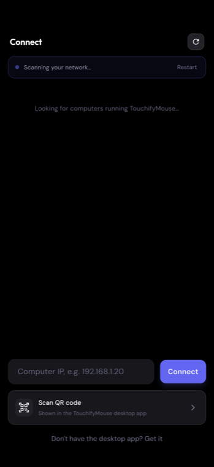
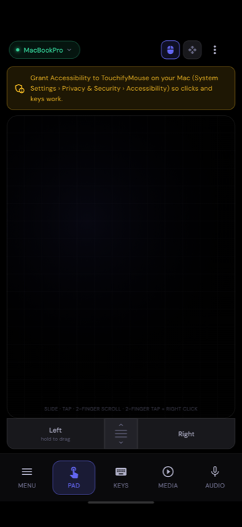
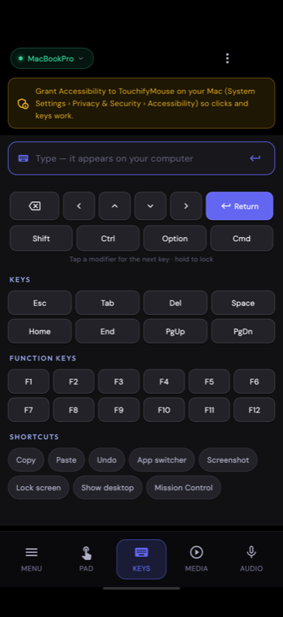
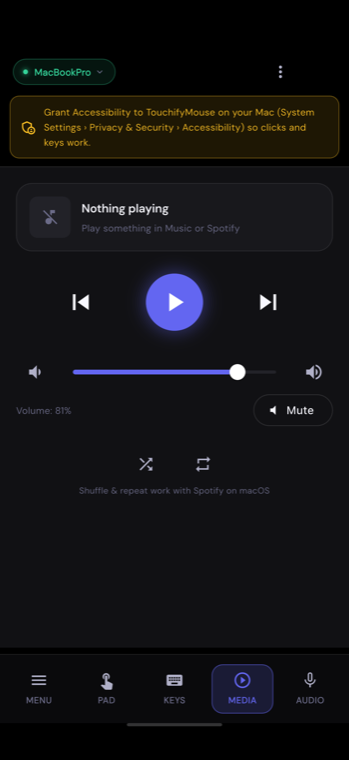
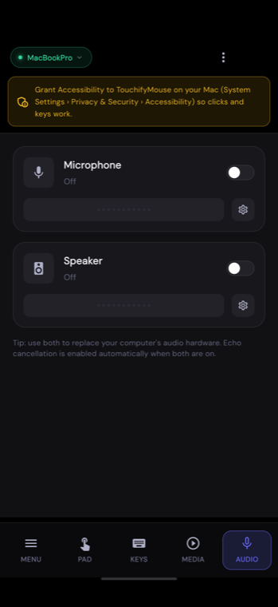
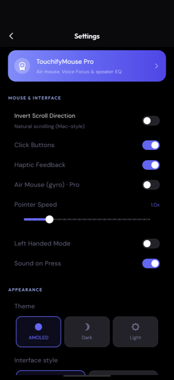

Install the companion on your computer, connect your phone on the same Wi-Fi, and use it as a trackpad, keyboard, media remote, microphone or speaker. About a minute, start to finish.
Open TouchifyMouse-mac.dmg and drag TouchifyMouse to Applications. The app isn't signed with an Apple Developer ID yet, so the first launch needs a right-click on the app → Open → Open. After that it opens normally and lives in the menu bar.
Run TouchifyMouse-win-Setup.exe. SmartScreen may warn about an unknown publisher — choose More info → Run anyway. Prefer no installer? Use the portable zip and run touchifymouse_desktop.exe from the extracted folder.
macOS blocks any app from moving the pointer or typing until you allow it. Windows needs nothing here, so skip ahead.
Open Permissions in the app and press Grant, then switch TouchifyMouse on in System Settings → Privacy & Security → Accessibility. It applies within a second or two — you don't need to restart anything.
Still says “Not granted” with the switch on? macOS ties that permission to one exact copy of the app, so after an update it can point at the old one. Press Reset permission in the Permissions screen and turn it on once more.
Get TouchifyMouse from Google Play (the iOS version is on the way). Put the phone on the same Wi-Fi network as your computer — that is the only requirement.

Open the app and it looks for computers running the companion. Tap yours and you're connected. Two other ways, if you need them:
Your computer is remembered, so next time the app reconnects on its own.
The tabs along the bottom switch between the trackpad, keyboard, media remote and audio.

| Slide one finger | Move the pointer |
|---|---|
| Tap | Click |
| Two-finger tap | Right-click |
| Two-finger slide | Scroll |
| Hold Left, then slide | Drag and drop |
| Scroll strip (middle) | Scroll with one finger |
Pointer speed, natural scrolling, left-handed mode and the click buttons are all in Settings.

Tap the text field and type with your phone's own keyboard — capitals, symbols, emoji and other languages all arrive exactly as typed.
Modifiers: tap Shift, Ctrl, Option or Cmd to apply it to the next key; hold to lock it. So Cmd then A selects all.
Shortcuts: one tap for copy, paste, undo, screenshot, app switcher, Mission Control or show desktop, plus arrows, Esc, Tab, Home/End, Page Up/Down and F1–F12.

Play, pause, skip and mute anything that answers the media keys — Music, Spotify, a video in your browser. The volume slider mirrors your computer's volume and moves with it.
Now-playing details appear for Music and Spotify.

Microphone sends your phone's mic to the computer. Speaker sends the computer's sound to your phone. Turn both on and echo cancellation is applied automatically.
Both need a free virtual audio driver, which the app offers to install: BlackHole on macOS, VB-CABLE on Windows.
Important for calls: Zoom, Meet, Discord and Teams keep their own microphone setting and ignore your computer's default. Pick BlackHole 2ch (macOS) or CABLE Output (Windows) as the microphone inside that app, or it will keep recording the built-in mic.

Appearance: AMOLED, Dark or Light, and two interface styles — Comfortable, or Minimal for a flat, quiet look.
Mouse: pointer speed, natural scrolling, click buttons, haptics and left-handed mode.
Privacy: switch anonymous crash reports and the update check off whenever you like.
Check both devices are on the same Wi-Fi — a phone on mobile data, or a “guest” network, can't see your computer. Some routers block the discovery traffic between devices (often called AP isolation or client isolation); if yours does, type the IP address shown in the desktop app instead, or scan the QR code. Also make sure the desktop app is actually running: on macOS it lives in the menu bar, not the Dock.
That is the Accessibility permission. Open Permissions in the desktop app: if it says “Not granted”, press Grant and switch TouchifyMouse on. If the switch already looks on, press Reset permission — macOS keeps that permission tied to one exact copy of the app, so an update can leave a switch that is on but no longer applies.
Media control also needs the Accessibility permission above. Without it the app can only reach Music and Spotify, so a video playing in your browser won't respond. Grant it and everything that answers the media keys works.
Your call app is probably still listening to the built-in microphone. In its audio settings choose BlackHole 2ch (macOS) or CABLE Output (Windows). The app tells you which device to pick while the microphone is on.
Some phones — Xiaomi, OPPO, Samsung and others with aggressive battery management — freeze apps in the background, which closes the connection. Allow TouchifyMouse to run in the background, or turn battery optimisation off for it, in your phone's battery settings. Reopening the app reconnects immediately.
Audio needs a steady Wi-Fi link. Move closer to the router, prefer 5 GHz, and avoid using the microphone and speaker at once on a busy network. If the computer is on Ethernet and the phone on Wi-Fi, make sure both are on the same subnet.
Still stuck? Email aitools.deventiatech@gmail.com and say which computer and phone you're using.